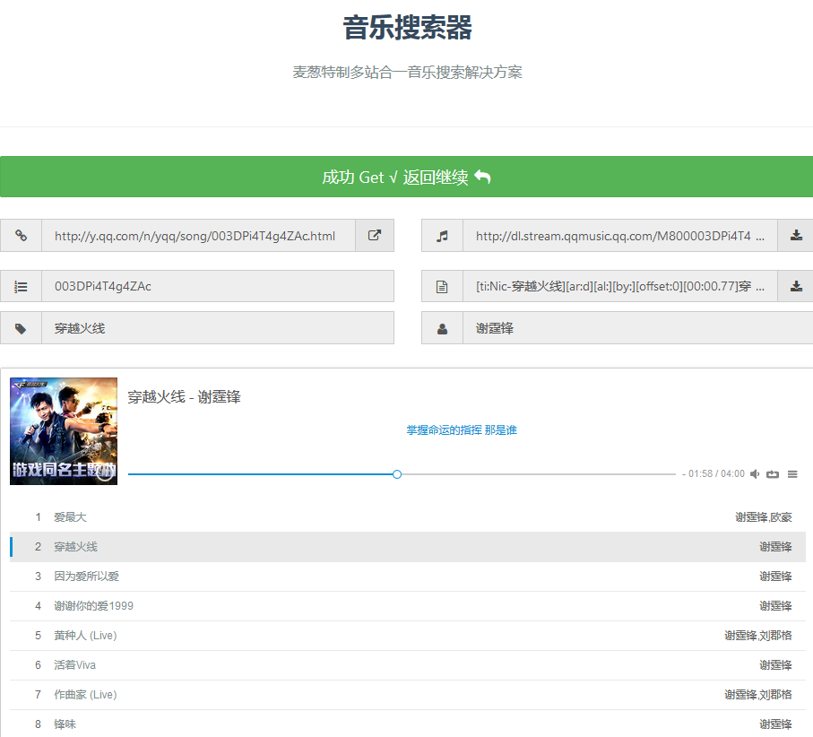

网易云音乐 QQ音乐 酷狗音乐 酷我音乐 虾米音乐 百度音乐 一听音乐 咪咕音乐 荔枝FM 蜻蜓FM 喜马拉雅FM 全民K歌 5sing原创 5sing翻唱方案一
修改 index.php 文件里的 MC_PROXY 为您的代理地址
将 core/music.php 里需要代理的 URL 'proxy' => false 改为 'proxy' => true
方案二
在 core/music.php 里查找 setTimeout，将其后面的数值 20 改为更大。
在 static/js/music.js 里查找 `timeout`，将其数值 30000 改为更大。
方案三
服务器要支持 curl。
更换服务器，选择延迟更低的服务器。1. 音乐需要付费才能收听
2. 版权限制，外站无法获取
3. 服务器 IP 所在地不在源站允许的区域
4. 音乐下架了，链接被去除